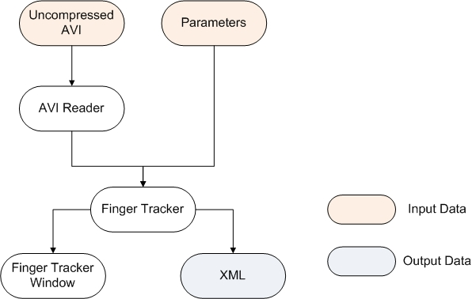
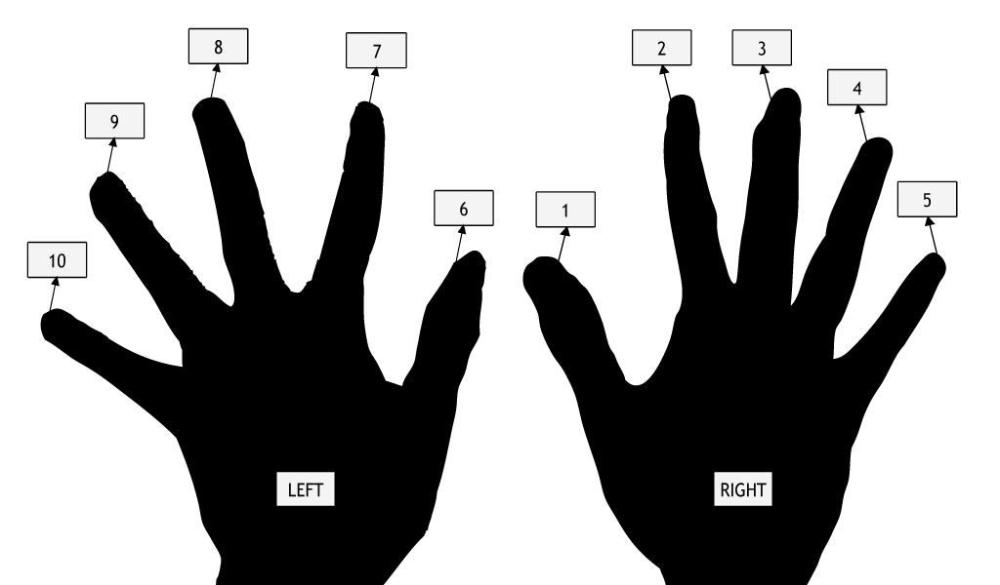
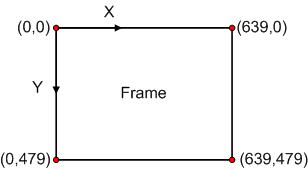
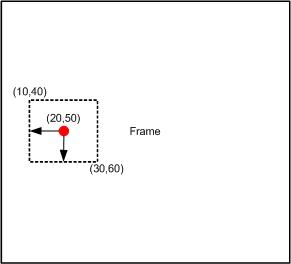

Project Description
Analysis of Tactile Map Reading (ATMR) is a project which helps the scientists to analyses the blind people's behaviors of using haptics map. As a sub-project, Visual Finger Tracking extracts the position information of each finger tips from the experimental videos of blind people using haptics map. These important data can be used in the data analysis part of ATMR.
For specific, the following features are included:
Visual Finger Tracking project group combines five students: Peter Maricle, Fan Wang, Kristy Tomas, Raihan Masud and Kyle Vessey. This is a class project for UO CIS course 423/510 Spring 2009.
System Requirement
CPU: Intel Pentium III (or better)
RAM: 128MB
Disk Space: 100MB free storage space
OS: Windows XP, Mac OS
Software: JRE 1.6 (or higher)
System Architecture and Design
The following diagram is the system architecture of Visual Finger Tracking:

When the application begins to run, the main method in RunFingerTracker is invoked. Uncompressed AVI file is read by AVI reader and stack of frames are created. Then the users need to assign which finger to track by click the frame. After that, FingerTracker uses the color value to track the finger tips in all frames. After all frames are processed, a XML output file is generated to store all the extracted information.
Loading Video
The program supports uncompressed AVI format. It uses ImageJ AVI plug-in and ImageStack library to load uncompressed AVI video and to create a stack of all frames. ImageJ is an open source library. Its documentation can be found at http://rsbweb.nih.gov/ij/docs/index.html.
User Interface
The advanced UI of the program can let the users to select which fingers to track and assign the finger IDs to them. The advantage of letting the users to do so is the program can avoid the effect of variable lighting conditions of the video. The marked colors may change dramatically under different light. By doing this, the program can gain more flexibility.
About the finger ID, the program follows the standard of ATMR group:

Tracking Fingers
Before talking about the algorithm, let make the definition of position. The program uses x-y dimentions to show the finger's position on video. For example, for a video with resolution of 640*480, the x-y dimensions for each frame are shown below. If the position of the finger can not be found, the program will return (-1,-1).

How to find the finger? The program searches for the pixels in current frame with the color similar with the target color and find the center point these pixels. This center point is finger's position of this frame.
What color is used as target color? There are two options, using the color of the last frame's position or using the initial color of the user assigned. The advantage of using the color of the last frame's position is if the color in the video changes dramatically, the program can produce the best result. Using another method will work best when the finger moves outside the video in some frames.
In the process of comparing the RGB color values of current pixels and the target color. Searching for exactly the same color is unpractical. The color of the same spot will change due to the light or the condition of the camera in each frame. The program uses threshold to set a range of accepted colors. For instance, if the user set the threshold as 20, and the target color is (100, 100, 100), the program will accept any pixel with color value between (80, 80, 80) and (120, 120, 120). If the threshold is too large, the position may not be accurate; while if it's too small, the possibility of "position can not be found" will rise. The users can set different thresholds for different videos.
There is an algorithm to save the tracking time. At first, the program only searches the pixels around the last position. The range covers +- 10% of total frame size. For instance, the frame size is 100*100 and the last position is (20, 50), the program will search in the rectangle between (10, 40) and (30, 60) (shown below). If in the range, the position can not be found, the program will search the whole frame. If it's still the same, the program will return the position as (-1, -1).

Notice, the program only tracks the frame which the user used to the last frame in the video. That is, if an user uses frame 10 to assign which fingers to track, the program only search for frame 10 to the last one.
XML File
Once the processing of one frame is over, the program will write one line of data for each tracked finger into the result xml file. The format of the xml file is like below. In the root element, the StartDateTime is the time when the processing begins. Each element "event" contains the position of one finger in the frame. It has four attributes: FingerID, time, and x-y dimensions. The time means the time delay in ms of each frame.
<?xml version="1.0" encoding="UTF-8"?>
<coordStream StartDateTime="2009-05-25T10:24:10.953-0700">
<event fingerID="1" time="142.857" X="521" Y="289" />
<event fingerID="6" time="142.857" X="519" Y="225" />
...
</coordStream>
Notice that only one xml will be saved for one video processed. If the user processes one video for multiple times, only the latest result will can be found. If the user processed two different videos with same name, the result of the earlier processing will be overwritten.
Directory Structure
Inside the project root folder are folders and files:
Folders:
Files:
Building the Project
Notice that JRE 1.6 or higher is needed. Find JRE at http://java.sun.com/javase/downloads/index.jsp. To set up this project, we need Eclipse. You can download Eclipse for free from www.eclipse.org. The detailed instruction is listed below: